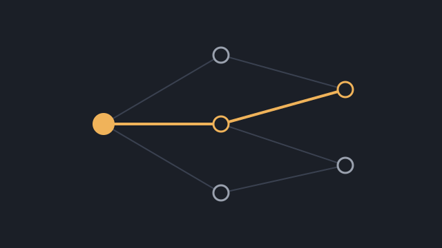

Educación
-
[COMPLETAR: periodo]
Pontificia Universidad Católica de Chile
[COMPLETAR: carrera]
-
[COMPLETAR: periodo]

Politecnico di Milano
[COMPLETAR: carrera]
Proyectos
-

CityExpress
Ruteo y entrega de paquetes. Equipo de ~5 personas, infraestructura en AWS.
- AWS
- [COMPLETAR]
-

Optimizador de suministros para incendios
Modelo de optimización para distribuir suministros ante incendios en la Región del Biobío.
- Gurobi
- [COMPLETAR]
¡Contáctame!
Sea para un proyecto, una idea o simplemente un saludo. ¡Estoy feliz de conocer!